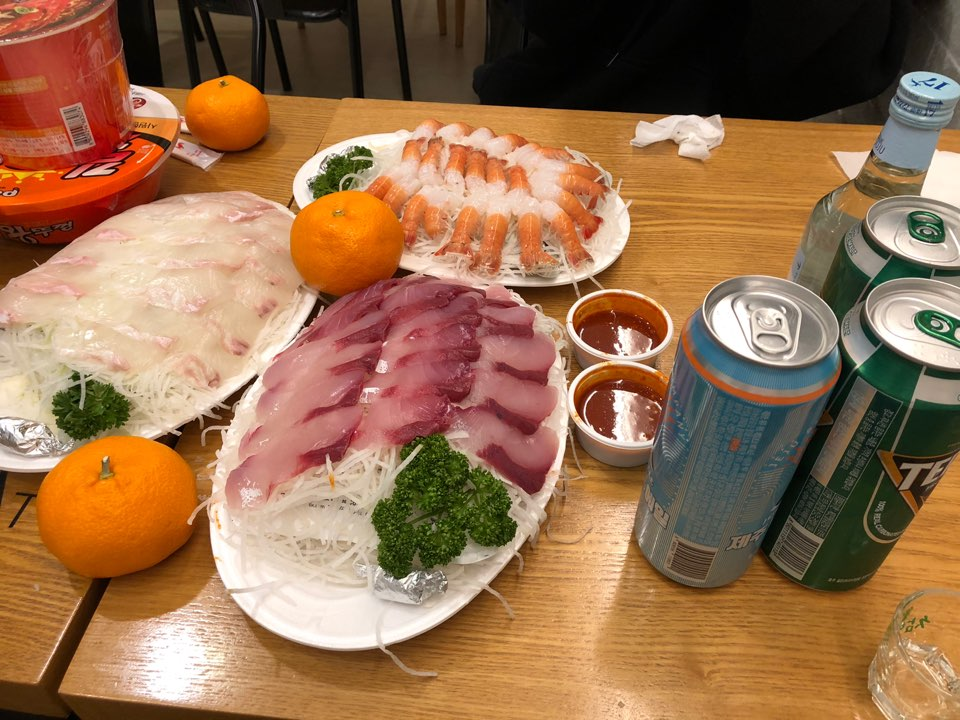

첫째 날
하지만!!!!!!!!!>잔뜩 신나서 도착한 우리를 반기는 것은 엄청난 바람이었다.(날아갈뻔.
진짜루.) 그렇게 우당탕탕 숙소에 도착을 했고 하늘은 이미 캄캄해져있었다. 매우 당황
스러웠지만 그렇지 않은 척 짐을 푼 후 밥을 먹으러 갔다.
참고:애월에 있는 ‘정직한돈’이라는 식당인데 네이버로 예약하고 가면 서비스로 김치찌개를 준다.
흑돼지와 딱새우는 몹시 맛있었고 낮에 힘들었던 것은 모두 잊혀졌다.물론 다시 숙소로
돌아가는 길은 몹시 험난했다. 바닷가라 그런지 바람이 많이 불었고, 우리는 올레길을 걸
어보자며 꾸불꾸불한 길로 걸어와 더욱 힘이 들었다.
둘째 날
둘째 날에는 눈뜨자마자 김만복에 갔다.이미 인스타그램에 유명한 맛집이라 기대하고
갔는데 역시나 맛있었다.
**여기 꼭 가세요 제주도에 여러 지점 있음**
든든하게 배를 채운 우리는 뚠뚠 신나게 협재로 향했다. 물론 몹시 추웠지만 바다가 아
름다웠으므로... 용서....제주도에 가서 가장 좋았던 것은 내가 제일 좋아하는 과일인 귤을
마음껏 먹을 수 있다는 점이었다.(물론 평소에도 왕창 먹음...)

귤을 사고 돌아가는 길에 귀여운 강아지와 고양이도 만났다.
저녁에 가기로 한 식당이 문을 닫아버려서 제주도에만 파는 맥주와 함께 치킨을 먹었다.
감귤 맛이 나는 맥주였는데 맛이 쌉쌀하면서 달달하면서 특이했다. 이렇게 하루를 마무리
하는 듯 했지만 문제가 발생했다.
내가 ‘방 키’를 잃어버렸다. (두둥)
방 키를 잃어버리면 벌금이 3만원이랬는데 망했다 망했다. 하며 찾으러 다녔지만
그 어디에도 없었다...(물론 다행히도 다음날 벌금을 받지 않으셨다.)

내 친구 변모양이 멍청한 친구(문희진)를 둔 비용이라고 생각하고 절반을 내주겠다해서
약간의 감동타임이 있었지만 눈물은 생-략하고 방키를 가슴에 남긴 채 우리는 잠이 들었다.
셋째 날
눈을 떴더니 셋째 날이었고 우리는 공항 쪽으로 숙소를 옮겼다.게스트하우스에 처음 가보는
것이라 두근두근 설레이는 마음 뿐이었고 게스트하우스는 정말 좋았다.
우리가 간 곳은 미르 게스트하우스였는데 정말 친절하시고 방도 매우 깨끗하다. 다시 또 가고 싶은 곳 1순위

너무나 좋았던 이층침대!
짐을 풀고 예쁜 카페에서 여유를 어느정도 즐기고 난 후 우리는 제주도에서 가장 유명한
동문시장에 가서 회를 포장해 왔다.
저녁에 가면 회를 더 싸게 팔기도 함
확실히 바다 쪽으로 가니 회도 저렴하고 더 맛있었다.
넷째 날
넷째 날에는 제주도에 있는 성 박물관에 갔다.
생각보다 유익한? 정보들이 많아서 성교육을 받는 것 같았다. 체험할 수 있는 것도 다양했다.
서귀포 쪽을 여행한다면 꼭 가보세요
마지막 날
마지막 날은 카페에 가고 기념품 샵에 다녀온 후 다시 서울로 돌아왔다. 5일이 길다면 긴
시간이지만 우리에게는 몹시 짧게 느껴졌고 다시 돌아오는 발걸음이 무거웠다.